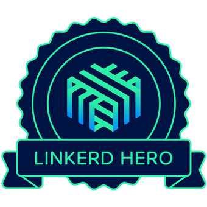

layout: true <div class="slide-footer"><a href="https://carolynvs.com/contributor-pipeline">carolynvs.com/contributor-pipeline</a></div> --- class: center, middle # Build Your Contributor Pipeline .right[ CNCF SIG Contributor Strategy<br/> Carolyn Van Slyck<br/> Josh Berkus ] ??? Josh --- class: center, middle .grid[ .col[ <br/> Carolyn Van Slyck<br/> Principal Software Engineer<br/> Microsoft ] .col[ <br/> Josh Berkus<br/> Community Architect<br/> Red Hat ] ] ??? Introduce ourselves: Josh then Carolyn --- class: center, middle .white[ ## What are you building? ] ??? Carolyn * Before we go into details on _how_ to achieve contributor growth, take a moment to be intentional about it. * What are you trying to achieve? Community around the project? Finding the next maintainer? Wider range of skills and perspectives? * Be honest with what time and energy you have to give. * Who else is committed to making this happen with you? --- class: middle, center .white[ ## Where do contributors come from? ] ??? Josh --- class: center ## Individual Users * They use it, or develop with it * Sometimes: really excited * Sometimes: want to fix something specific * Usually power/production users ??? Josh --- class: center ## Corporate Users * Their company depends on it * Sometimes: come to fix something * Sometimes: come to maintain ??? Josh --- class: center ## Learners * Want to learn the language, OR * Want to learn the tech, OR * Want to beef up resume ??? Josh --- class: center ## Who do you want to join? * New or Existing users? * Are you lacking contributors with specific skills?<br/> Project Management, Technical Writing, Design * Non-code contributors:<br/> Docs, user stories, blog posts, design, event management * Experienced maintainers? ??? Carolyn * Understand who you are looking for and make sure your welcome mat includes them! * Targeting everything at once is usually too much. * Evaluate your capacity to on-board --- class: center ## Enablers .left[ .grid[ .col[ .green[Low Investment:] * contributing.md * build docs * contrib list/chat * public dev meetings * newsletter * contrib ladder * dev roadmap ] .col[ .green[High Investment:] * contrib tutorial * contributor hours * live workshops * hackathons * mentoring programs * live test env ] ] ] ??? Josh * Make sure to mention the public communication of roadmap and current dev priorities * Published governance demonstrates that there isn’t a glass ceiling, even if there’s just one maintainer right now --- class: center ## Recognition! .left[ .grid[ .col[ * digital badges * swag * public thank yous ] .col[  ] ] ] ??? TODO: josh to finish https://www.youracclaim.com/badges/538d249f-ec6d-4c5c-93f4-44d7c5596b36/twitter https://linkerd.io/community/heroes/ --- class: center ## Blockers * CLA * no/slow repo rights * unclear/hostile governance * difficult merge process * opaque tests * slow/no reviews * usurping PRs ??? Josh * These are things that will turn away contributors --- class: center ## Communications: Principles * do your work in the open * discuss strategy/plans, not just code * set expectations around response times * fewer/optional meetings are better ??? Josh * TODO: include catherine's advice * dev meetings include strategy * et expectations around response times --- class: center ## Communications: What’s most valuable 1. Written asynchronous communications<br/> Docs, Mailing List, Blog, Discussion Forum 2. Developer Meeting 3. Office Hours / End-User Forum "Community Meetings" work better in other formats ??? Josh * Meetings with no content/action items/activities should be blog posts. * Synchronous activity is expensive, least attended * Users show up to get access to core developers --- class: center ## Set your expectations .grid[ .col.double[ * Pick what makes sense for your project * Focus initially on what helps you scale * Try one at a time ] .col[ ] ] ??? Carolyn We are listing _everything_ that you can do, it’s not everything that every project _should_ do. https://pixy.org/5792093/ --- class: center, middle .white[ ### This will always be an activity, it is not a destination ] ??? Carolyn --- class: center ## Community must advertise .grid[ .col.double[ * Readme * Contributing Guide / Landing Page * Good First Issues * Events/talks ] .col[ ] ] ??? Carolyn * People don’t always know to look for a contributing.md but everyone sees your readme. Let people know that you want contributors. * These documents set the tone for your project and impacts if people feel welcome * When a new contributor takes a peek at the contributing.md, they aren’t just looking for _how_ to contribute, but a feel for if your project is a good match. https://pxhere.com/en/photo/860691 --- class: center ## Example Readme <a href="https://porter.sh/src/README.md" target="_blank"> </a> ??? Carolyn --- class: center ## Example Landing Page <a href="https://porter.sh/contribute/" target="_blank"> </a> ??? Carolyn --- class: center ## Example Contributing Guide <a href="https://github.com/cncf/project-template/blob/main/CONTRIBUTING.md" target="_blank"> </a> ??? Carolyn --- class: center ## Help Wanted Label * Low Barrier to Entry * Clear Task * Medium to Low Priority * Up to Date * May be looking for specialized skills ??? Carolyn An issue that needs specialized knowledge that may not necessarily be domain specific to the project, e.g. people who know windows, or front-end design or networking --- class: center ## Good First Issue Label * No Barrier to Entry * Issue Provides Enough Context * Solution Explained in Issue * Gives Examples to Copy and Modify * Identifies Relevant Code * Ready to Test ??? Carolyn --- class: center ## Example Good First Issue <a href="https://github.com/getporter/porter/issues/1407" target="_blank"> </a> ??? Carolyn --- class: center ## Perpetual Good First Issue * New contributors have a unique (and temporary) perspective * Get feedback on documentation and new user experience * If they can open a PR for problems found, even better! ??? Carolyn * Encourage new contributors to add to the new contributor guide, they have a perspective that you can’t replicate * Have them run through “cold” without immediate help from you to spot gaps and communication problems --- class: center ## Onboarding .grid[ .col.double[ * Contributing Guide * Environment Set up * Contributing Tutorial * Project Tutorials * First Pull Request Experience ] .col[ <img src="img/welcome-aboard.jpg" width="300px" alt="Person standing in front of a welcome mat that says Welcome Aboard" /> ] ] ??? Carolyn Goal: Someone can make their first pull request without playing 20 questions Help them help themselves Get reviewers on the same page for how they are expected to help new contributors It’s okay to set boundaries https://pxhere.com/en/photo/1173337 --- class: center ## Teaching Mediums * Text first. More accessible. * Videos, keep them small. You will re-record as things change * In-person is the least scalable ??? TODO: josh --- class: center ## Example Contributing Tutorial <a href="https://porter.sh/contribute/tutorial" target="_blank"> </a> ??? Carolyn --- class: center ## Contributor Ladder * Outline project roles and how to achieve them * Consider roles you need but don’t have yet * Agree on how contributors can earn trust * Shows people that there is a path to maintainer ??? Josh * Don’t compare against the original creators of the project * It’s okay to limit scope of responsibility --- class: center ## Example Contributor Ladder <a href="https://porter.sh/src/CONTRIBUTION_LADDER.md" target="_blank"> </a> ??? Josh --- class: center ## Templates * <https://github.com/cncf/project-template> * [Readme](https://github.com/cncf/project-template/blob/main/README.md) * [Contributing Guide](https://github.com/cncf/project-template/blob/main/CONTRIBUTING.md) * [Contributor Ladder](https://github.com/cncf/project-template/blob/drafts/contributor-ladder.md) ??? Carolyn --- class: center ## Guides * <https://github.com/cncf/sig-contributor-strategy> * [Issue Labeling](https://contribute.cncf.io/maintainers/github/issue-labels/) * [Recruiting Playbook](https://staging--cncf-contribute.netlify.app/maintainers/community/recruiting-playbook/) * [Contributor Growth Framework](https://staging--cncf-contribute.netlify.app/maintainers/community/contributor-growth-framework/) ??? Carolyn --- class: center ## CNCF SIG Contributor Strategy * Meet every 1st and 3rd Thursday at 10:30am Pacific Time * Contributor Growth<br/> 2nd and 4th Tuesdays at 2pm Pacific * Governance * Maintainers Circle ??? Josh Encourage people to drop into meetings and maintainer's circle with questions